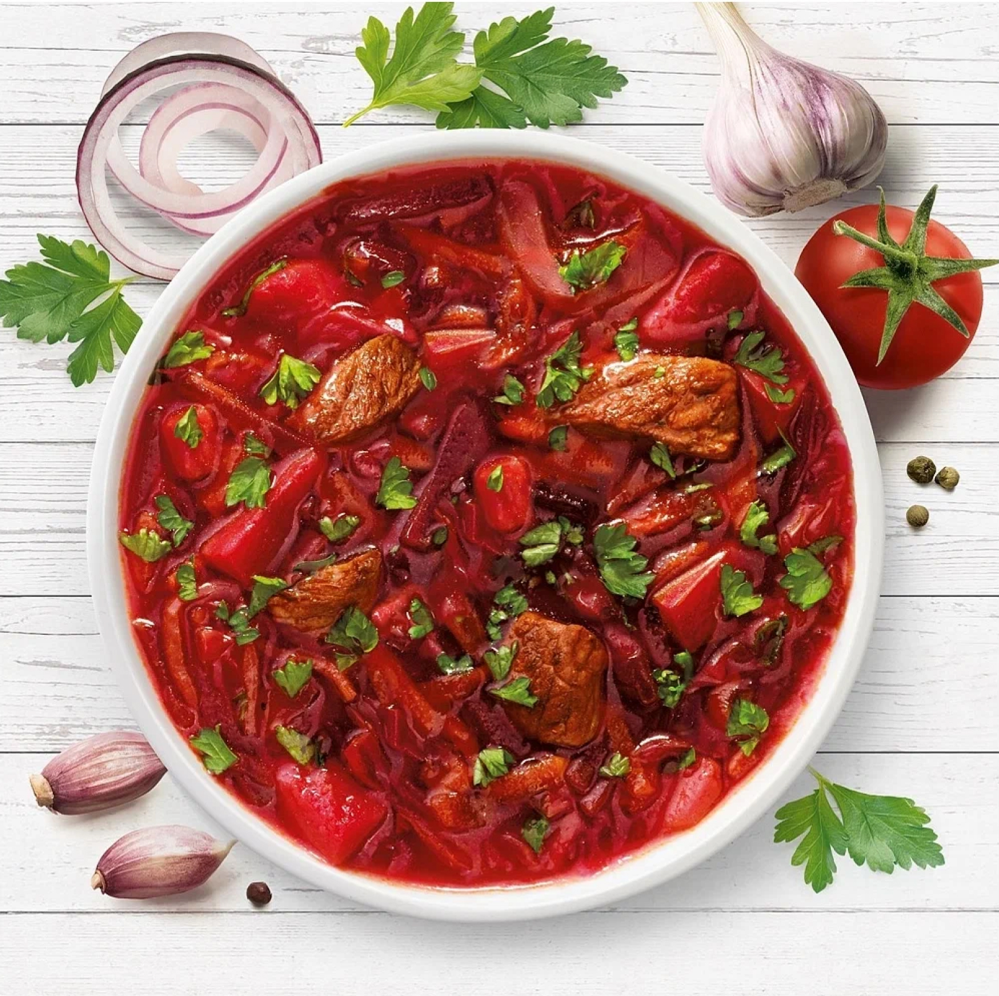

Борщ
Рецепт:
- говядина - 1 кг
- картофель - 500 г
- капуста - 300 г
- свекла - 400 г
- морковь - 200 г
- лук - 200 г
- уксус(6%) - 1 ч. л.
- чеснок и лавровый лист - 2-3 шт
- томатная паста - 3 ст. л.
- соль, перец, растительное масло, зелень - по вкусу
Приготовление
- Мясо залить водой, варить в течение 1,5 ч. Мясо нарезать небольшими кусочками. Добавить в бульон.
- Лук мелко нарезать. Морковь натереть на средней терке. Капусту нашинковать тонкой соломкой. Свеклу нарезать тонкой соломкой. Свеклу обжарить на растительном масле.
- Добавить уксус и томатную пасту (если паста густая, добавить немного воды).Тушить в течение 5–7 минут.
- На растительном масле обжарить лук. Добавить и обжарить морковь. Картофель нарезать кубиками или брусочками. В кипящий бульон добавить картофель. Посолить.
- Когда бульон закипит, добавить капусту. Варить на небольшом огне в течение 5 минут. Добавить свеклу. Варить в течение 10 минут. Добавить лук и морковь. Добавить лавровый лист. Если необходимо, посолить, поперчить.
- Добавить чеснок, выдавленный через чеснокодавку. Убрать с огня. Дать настояться в течение 15–20 минут. Добавить сметану. Посыпать зеленью.